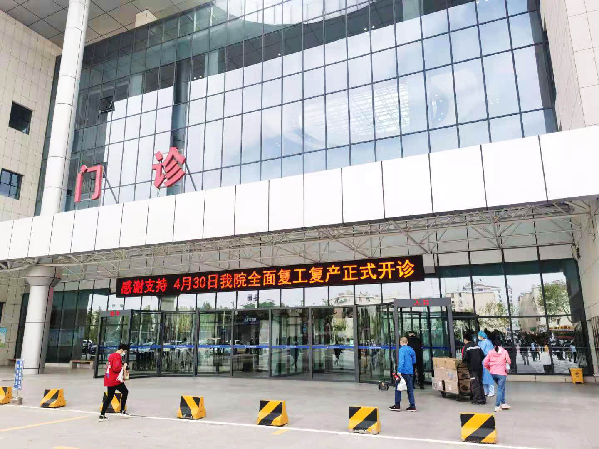

青岛市第三人民医院
青岛市第三人民医院始建于1931年，是青岛市卫生局直属综合性医院。其前身是美国基督教创办的教会医院“信义会医院”，是青岛市卫生健康委员会直属的三级综合性医院。医院地处李沧区，位于青岛市“拥湾发展、环湾保护”战略核心圈的中心地带，毗邻青岛新客站、胶州湾跨海大桥。医院占地88.78亩，一期建筑面积8.1万平方米，设有30余个临床医技科室。

青岛市第三人民医院始建于1931年，是青岛市卫生局直属综合性医院。其前身是美国基督教创办的教会医院“信义会医院”，是青岛市卫生健康委员会直属的三级综合性医院。医院地处李沧区，位于青岛市“拥湾发展、环湾保护”战略核心圈的中心地带，毗邻青岛新客站、胶州湾跨海大桥。医院占地88.78亩，一期建筑面积8.1万平方米，设有30余个临床医技科室。